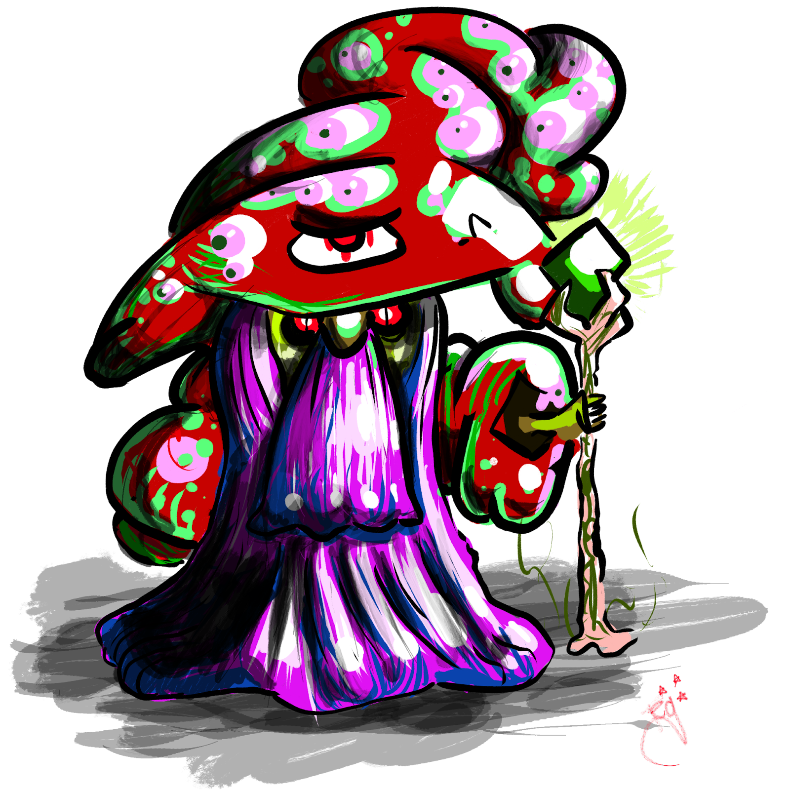

Sporcerer
This dude lives in dank places and stuff.

Lv 2 Fae Creature, Experience Granted: 10, Size: 2 Foot Cube, Speed: 10 Feet
Immune to sharp. Weak to fire. Amorphous.
HP 35, Energy 10, Defense 0
Standard Actions 2, Extra Actions 1
Toughness 10, Evasion 13, Willpower 15
Tech 15, Charm 10, Detect 15, Inspect 10, Medicine 15, Knowledge 15, Stealth 13
Spore Pollen
Type: Attack, Magical
Action Type: Standard, Decisive
Energy Cost: 2
Range: 30 feet, Targets: All within range (excluding itself).
Roll: Toughness vs 17
Failure: Target takes 6/12 poison damage ((poison damage temporarily decreases your Hit Point Maximum by an amount equal to your how much Poison Damage you have been dealt).
Death Cap
Type: Attack, Magical
Action Type: Standard, Decisive
Energy Cost: 1
Range: 15 feet, Targets: All within range (excluding itself).
Roll: Toughness vs 16
Failure: Target takes 6/12 poison damage ((poison damage temporarily decreases your Hit Point Maximum by an amount equal to your how much Poison Damage you have been dealt).
Telespore
Type: Support
Action Type: Extra, Decisive
Energy Cost: 1
Sporcerer moves up to 20 feet away to an unoccupied space he can see. Response abilities such as Opportunity Attack do not trigger for this movement and if Sporcerer was restrained, it is no longer.